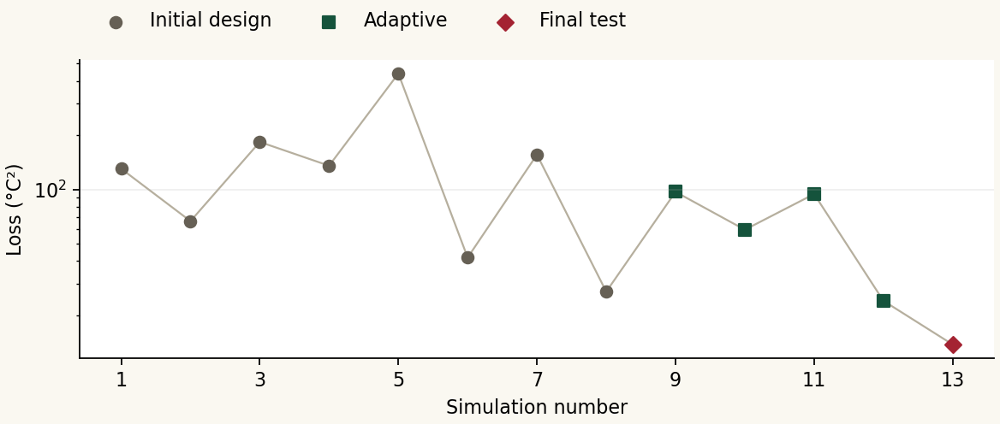
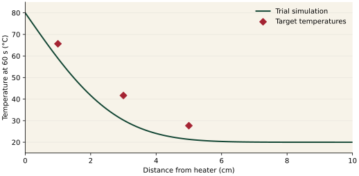

Use it when each simulation is expensive, several inputs are adjustable, and you can describe a good outcome. Your target might come from measurements, an analytical solution, or a conservation law.
You provide parameter ranges, target values, a simulator command, and a round budget. You receive the best run found, a separately evaluated final recommendation, and a record of every evaluation.
How it works
Parameters → Your simulator → Outputs → Learn → Next parameters ↻
Start with completed simulations or generate an initial design spanning your parameter ranges.
Fit models that learn which inputs tend to produce outputs near your target.
Choose the next inputs. Early rounds favor exploration where models disagree. Later rounds favor promising regions the models agree on.
Run your simulator, record its outputs, and repeat for the requested number of rounds.
Refit using all evaluations, choose a final parameter set, and test it in one extra simulation.
See Figure 1 and the method used in the paperFigure 1 from Wang et al. (in preparation). Open the full-size figure ↗
The paper fits conditional neural spline flows to simulation input–output pairs. Given the target, the ensemble draws and ranks candidate inputs. After the adaptive rounds it estimates the peak of the calibration density in physical parameter coordinates. See “Candidate Selection” in the manuscript. Durkan et al. (2019).
Quickstart · Heat a rod
Find a heater temperature and thermal diffusivity that reproduce the temperatures at three distances along a rod after one minute.
You need Python 3.10 or newer, Git, and a CPU. Our test took about six seconds after installation using one CPU thread. Installation time depends mainly on downloading PyTorch.
autocalibration run new-design.json --output from-design
What you should see
After the training messages, the final line reads:
Completed 13 evaluations. Results in from-design

Each point is a measured simulation. The loss can rise on an exploratory run. In this example the final test also gave the closest fit.
Check it worked. Open from-design/summary.json. Look for 13 evaluations, three temperatures in the final record, and a best loss no greater than the final loss. Our run reached 13.77 °C² with an 83.03 °C heater. Exact values can vary with the training environment.
initial_data points to your CSV. The example reuses two runs and makes five new calls.
No runs yet
new-design.json
initial_samples sets the Latin hypercube size. The example makes 8 initial + 4 adaptive + 1 final call.
To try the completed-run route with the supplied CSV, use the same installation and run:
autocalibration run existing-runs.json --output from-runs
Expect Completed 7 evaluations. That total includes the two imported rows. Each route needs a fresh output folder.
Use your own simulator
Copy either heat problem file and change four things. Keep "method": "neural_spline_flow" to use the flow workflow.
Parameters. Give each adjustable input a name, lower bound, and upper bound. For positive values spanning orders of magnitude, logarithmic spacing gives each decade comparable coverage. For example, use {"name":"diffusivity","lower":0.001,"upper":1,"scale":"log"}. Use linear spacing when equal absolute increments make sense.
Target. Under target, name each output and give its desired value. Use identical IDs in the simulator response and the imported CSV. Compare outputs at the same coordinates, time, and units.
Simulator command. For a Python adapter, set "simulator": ["{python}", "simulate.py"]. The runner starts it in the problem file’s directory and sends one JSON object on standard input.
Budget. Set adaptive_steps to the number of learn–select–run cycles. Budget for any newly generated initial runs and one final recommendation as well.
Python adapter template
Replace the import and call with your model’s interface. This example assumes the model returns temperatures keyed by distance in centimetres.
import json
import sys
from my_solver import simulate
parameters = json.load(sys.stdin)
temperatures = simulate(**parameters)
outputs = {f"temp_{x}cm": temperatures[x] for x in (1, 3, 5)}
print(json.dumps(outputs, allow_nan=False))
A target profile describes what you want the simulator to reproduce. Choose the output you want to match, where to compare it, and the value you want it to take at each point. Use the same reference for every parameter set, whether your first simulations are imported or newly generated.
In the paper, θ denotes the inputs you can adjust, c is the set of quantities measured in one simulation, and c★ contains their desired values. A completed simulation gives one pair (θ, c). The paper’s conditional neural spline flow (Durkan et al. 2019) learns from these pairs and proposes new inputs for the desired c★. A loss then summarizes how closely a completed run matches the reference.
How far does heat travel along a rod?
A 10 cm rod starts at 20 °C. A heater holds its left end at a constant temperature while its right end stays at 20 °C. The simulator divides the rod into cells and advances the heat equation for 60 seconds. You can change two inputs: the heater temperature and the thermal diffusivity, which controls how quickly heat spreads.
Your target is a temperature profile. At 60 seconds, you want the simulation to match temperatures at three positions along the rod. For this tutorial we generated those target readings using a finer reference simulation (200 cells, diffusivity 0.09 cm²/s, heater 80 °C) and rounded them to two decimals. Every trial uses 100 cells.

Distance
Target at 60 s
Trial at 60 s
Output ID
1 cm
65.66 °C
58.90 °C
temp_1cm
3 cm
41.68 °C
30.26 °C
temp_3cm
5 cm
27.69 °C
21.35 °C
temp_5cm
Read one trial. With the heater at 80 °C and diffusivity at 0.04 cm²/s, too little heat reaches the interior. Increasing diffusivity would carry heat farther along the rod. The pipeline tries parameter pairs and compares the three simulated temperatures with the same three targets each time. The local loss is the sum of the three squared temperature differences.
For your own simulation, choose an output field, a sampling time, and the locations where you want to match it. Put the desired values in your problem file under target. Have your adapter return the simulated values under the same IDs. An imported results table uses those IDs as column names. Download the rod target profile · Read the heat solver
How the paper defines its targets
Sedov blast wave. At a fixed time, compare density, pressure, radial velocity, and transformed specific internal energy with the analytical blast-wave solution on a common radial grid (Taylor 1950). Each output is a simulated value minus its analytical reference, so the desired profile is zero at every radius. The reported error accounts for radial bin widths.
Rotating cylinder. The study uses the Enzo hydrodynamics code (Bryan et al. 2014). Track the change in each of the three angular-momentum components at 51 saved times, relative to the initial component value and scaled by the magnitude of the initial axial angular momentum. Conservation gives a target of zero drift in each component at every time.
SAGE galaxy formation. The SAGE codebase implements the galaxy-formation model described by Croton et al. (2016). Its calibration targets are observations. For example, the study uses the galaxy number density in stellar-mass bins measured by Baldry, Glazebrook & Driver (2008). The adapter must apply the same bin definitions and logarithmic units to its predictions. The paper’s comparison score averages squared residuals within each observable after scaling by its observed range (mapped to [−1, 1]), then gives each observable equal weight. A densely sampled observable therefore gets the same total weight as a sparsely sampled one. Inspect the published SAGE target bins.
Before you run
Test the simulator command with one input. Check that it exits successfully and prints a single JSON object with a finite number for every target ID.
Check the units and scale of each simulated output against its target. For imports, check parameter bounds and column names.
If your simulator is stochastic, choose how to handle its seed or average repeated runs inside your adapter. The runner records each returned value as one observation.
Use a new output folder. A failed evaluation stops the run. Completed rows remain in evaluations.jsonl.
Choosing a loss for outputs with different units
The local runner sums squared differences between the outputs and their targets. For temperatures in °C, the loss is in °C². For unlike quantities, apply the same scaling to each target and its simulated counterpart before returning them. Otherwise a large numerical range can dominate the loss.
The SAGE paper maps each observable’s observed range to [−1, 1], averages squared differences across that observable’s bins, then averages across observables. This gives equal weight to each galaxy property. See the SAGE comparison targets.
Settings guide
Start with your simulation budget. Increasing the number of candidates or model fits mainly changes how much computation goes into choosing each run.
Setting
What it controls
Example or default
When choosing
adaptive_steps
New adaptive simulations
4 in the heat example. The paper used 20 for hydrodynamics and 25 for SAGE.
Reserve one extra call for the final recommendation.
initial_samples
Initial space-filling runs
8 for heat, 5 for hydrodynamics, 25 for SAGE.
Supply at least as many initial runs as validation folds. The heat example uses 2 folds and the paper uses 5.
candidate_pool_size
Options ranked each round
256 for heat, 4,096 for the cylinder, 5,000 or 10,000 in the eight-target SAGE runs.
A larger pool adds scoring work. Only one candidate goes to the heat simulator.
tuning.schedule
When Optuna searches for model settings
initial tunes once, as in the paper.
every_iteration searches before each adaptive proposal. It adds fitting time.
tuning.members
Flows fitted independently in each round
3 by default and in the heat example.
More members give more estimates of disagreement and take longer to fit.
Disagreement weight (λ). Early rounds reward exploration where the models disagree. Later rounds favor promising regions where they agree. The runner adjusts this weight automatically.
How model tuning and candidate pools work
Optuna (Akiba et al. 2019) chooses flow settings using the lowest mean held-out negative log-likelihood. Set tuning.trials for search attempts, tuning.folds for validation groups, and tuning.epochs for training passes per fit. Both tuning schedules refit model weights each round. See the configurable search space.
In one SAGE comparison with the same initial simulations, the first new evaluation had five-observable loss 0.126 with 5,000 candidates, 0.080 with 10,000, and 0.340 with 20,000. Pool size changes which candidate wins the ranking, so increasing it need not improve the next simulation.
Results from the paper
The same selection loop was tested on a shock profile, a conservation law, and galaxy observations. Each test used its own physical measure of agreement. The hydrodynamic studies also used an optional simulation-cost penalty (β). The v0.3.0 local runner ranks candidates using density and disagreement alone.
Sedov blast wave
Each search used 26 simulations. Accounting for predicted cost gave a final recommendation with nearly the same shock-profile error as the search without a cost penalty (0.2855 versus 0.2860) and 54.7% less refinement complexity. In both searches an earlier simulation had lower error than the final recommendation.
Rotating cylinder
With a moderate cost penalty (β = 0.1), the final recommendation used 22% less refinement complexity than the best initial run, with 10% higher angular-momentum conservation error. Compared with the no-penalty recommendation, it achieved 5.3% lower error and 2.6% lower complexity. At β = 1, final error was about 6.5 times the β = 0.1 error. The best initial run retained the lowest error.
SAGE galaxy formation
We calibrated the Semi-Analytic Galaxy Evolution (SAGE) model against observed galaxy properties. The table compares the adopted simulations with the published manual calibration of Croton et al. (2016). Lower loss means closer agreement.
Calibration
Loss on original five
Loss on all eight
Change from published manual calibration
Published manual calibration
0.090493
0.128536
Reference
Five targets (four searches)
0.043655–0.058346
0.134188–0.157553
35.5–51.8% lower on five, higher on eight
Eight targets, baryon fraction free
0.082809
0.104723
18.5% lower on eight
Eight targets, baryon fraction fixed at 0.17
0.094088
0.100687
21.7% lower on eight
All four five-target searches improved the fit to those five properties while increasing the overall eight-property loss. Fitting eight targets improved the balance, although the adopted models still predicted too few quenched galaxies. The fixed-baryon eight-target result came from the final test (evaluation 51). The other adopted models came from adaptive evaluations.
Active learning versus a space-filling design. Starting from the same 25 simulations for each parameter count, the study compared 25 adaptive evaluations with 25 additional Latin hypercube points. At evaluation 50, active learning reached 42–76% lower loss than the best of three Latin hypercube designs across the six configurations.
Reproduce the SAGE table
After installation, rescore the archived outputs. Read L5 and L8 for the five- and eight-property comparisons. The first row corresponds to the published manual calibration.
Interpret each result in the context of its simulator, data, and run budget.
The reported adaptive searches are individual runs per configuration. The SAGE comparison includes three Latin hypercube controls and uses the small mini-Millennium merger trees.
The learned distribution is a calibration density shaped by the explored simulations. The study does not propagate observational errors or infer a Bayesian posterior.
Compare final_recommendation with best_observed. An earlier simulation may have a lower loss.
Fresh hydrodynamic simulations require Enzo and the case setup. Fresh galaxy simulations require SAGE and merger trees. The archived SAGE replay needs only the released software and bundled outputs.
Frequently asked questions
My simulator crashed. What happens?
The CLI stops and reports the evaluation number and inputs. Completed evaluations are flushed to evaluations.jsonl. Inspect the simulator’s standard error, fix the adapter, and rerun in a new directory. To reuse completed evaluations, convert their inputs and outputs to the initial CSV format.
What if the loss stops improving?
Inspect the individual outputs of your best run first. Check their units and target IDs. If the best inputs sit on a bound, reconsider the physically plausible range. If the initial sample leaves much of that range uncovered, consider more initial simulations or more adaptive rounds. An exploratory step can have higher loss than the preceding run.
Can simulations run in parallel?
The v0.3.0 local CLI waits for one simulator call to finish before choosing the next point. Your adapter can launch a parallel simulator and wait for its result. You can also generate the initial simulations separately in parallel and import their completed rows.
How does this compare with Bayesian optimization or simulation-based inference?
Bayesian optimization typically models a scalar objective and uses an acquisition rule to decide where to evaluate it next. Here the flow learns from simulation inputs paired with their output profiles and proposes parameters for a specified target. Both approaches can guide sequential experiments. Simulation-based inference often aims to quantify posterior uncertainty under a prior and an observation model. This workflow uses its density to guide a search and checks its recommendation in the simulator.
Cite the paper and software
Wang, Y., Oh, B. K., Kim, J.-h., & Jo, Y. Fully Autonomous Calibration for Astrophysics via Adaptive Parameter-Space Exploration (in preparation). For reproducibility, also record the software version and data used. Software v0.3.0 · Archived SAGE data.
Copy BibTeX
@unpublished{wang_autonomous_calibration,
author = {Wang, Yiyang and Oh, Boon Kiat and Kim, Ji-hoon and Jo, Yongseok},
title = {Fully Autonomous Calibration for Astrophysics via Adaptive Parameter-Space Exploration},
note = {Manuscript in preparation}
}